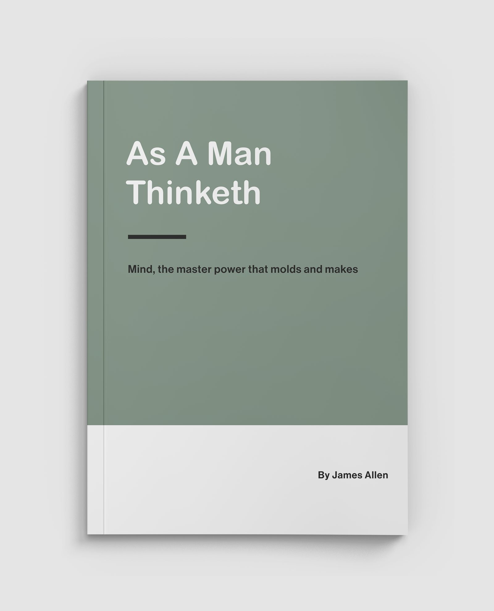
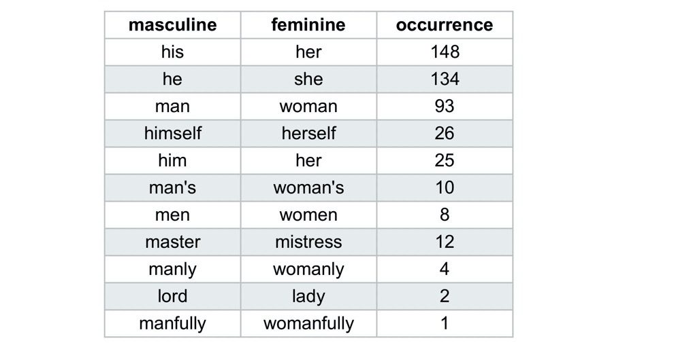
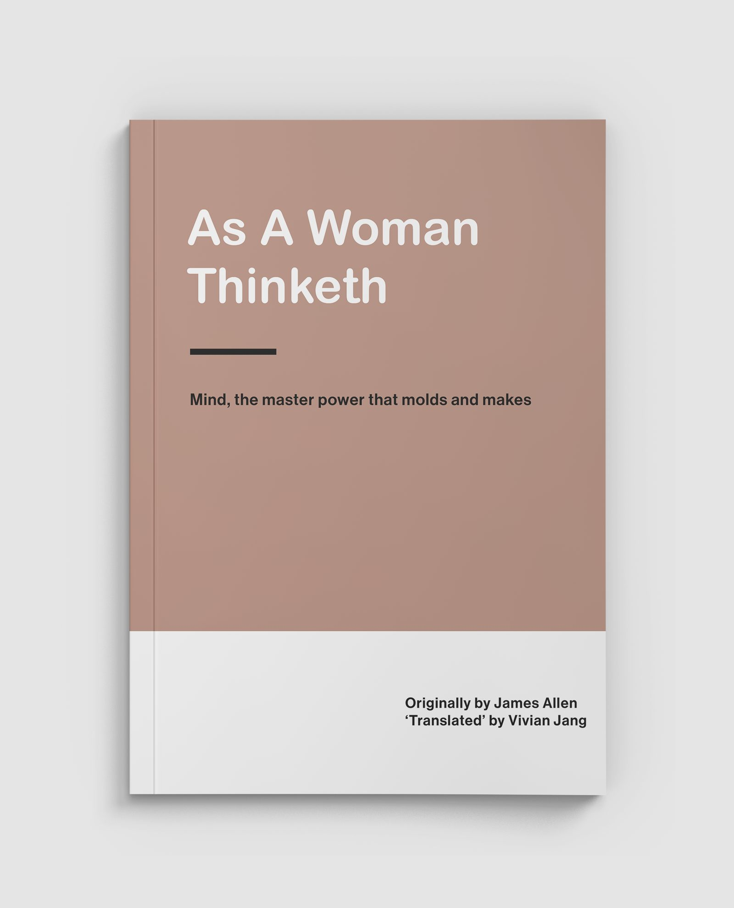
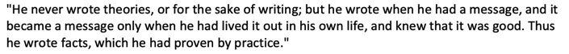
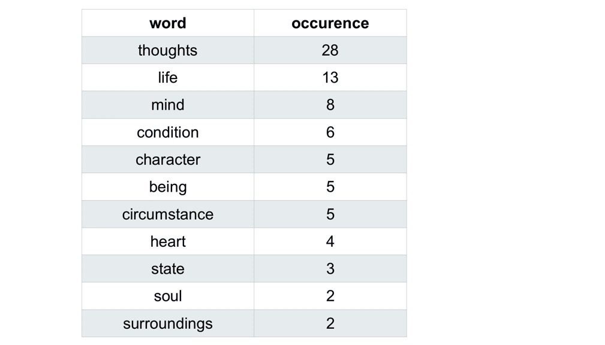
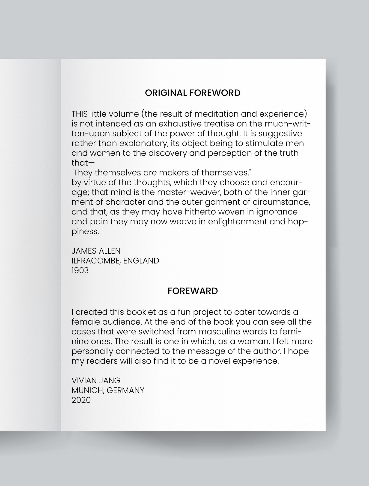
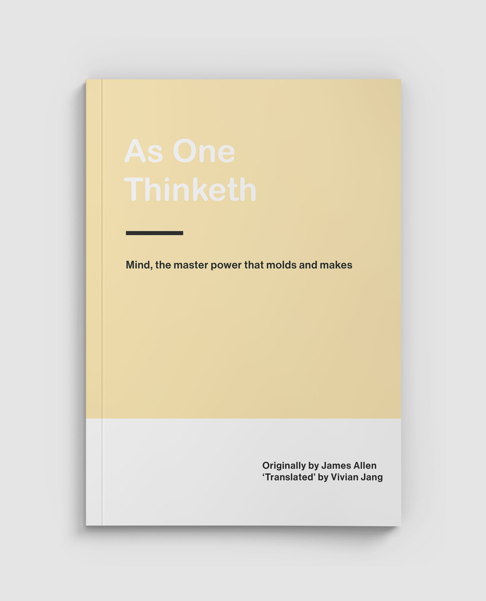
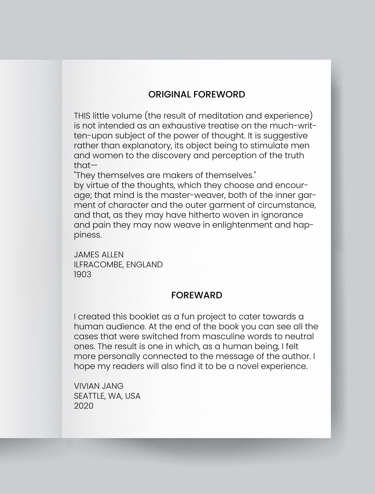

As One Thinketh
One time I came across this book

Not long after I started reading, I noticed something
the book used exclusively masculine words.
Triggered, I immediately went to work, replacing the masculine words with feminine ones.

I created a new version of the book, this time for women.

Content with my handiwork, I was ready to declare victory and move on.
And yet…
I felt I was missing something.
I went to find out more about the author.
This book was written 100+ years ago in 1903?!
I started to feel silly about my triggered reaction.
Was I unfairly judging an old book through today’s lens?
I even found this quote from the author’s wife:

Perhaps I could’ve given the author the benefit of the doubt.
I dug deeper to see which words were attached to the masculine pronouns.

The words seemed to be relevant to all people, not just men!
And then I noticed it.

I was originally triggered
because I felt excluded from the audience as a woman.
And yet
my solution was also excluding others!
So I tried again

